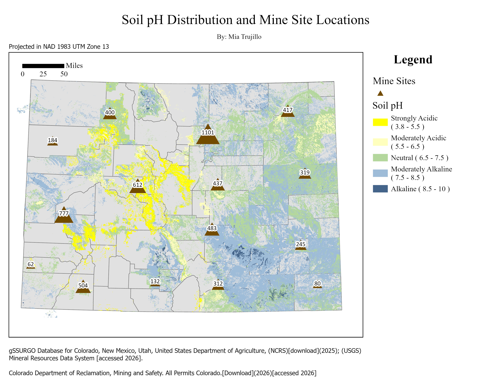
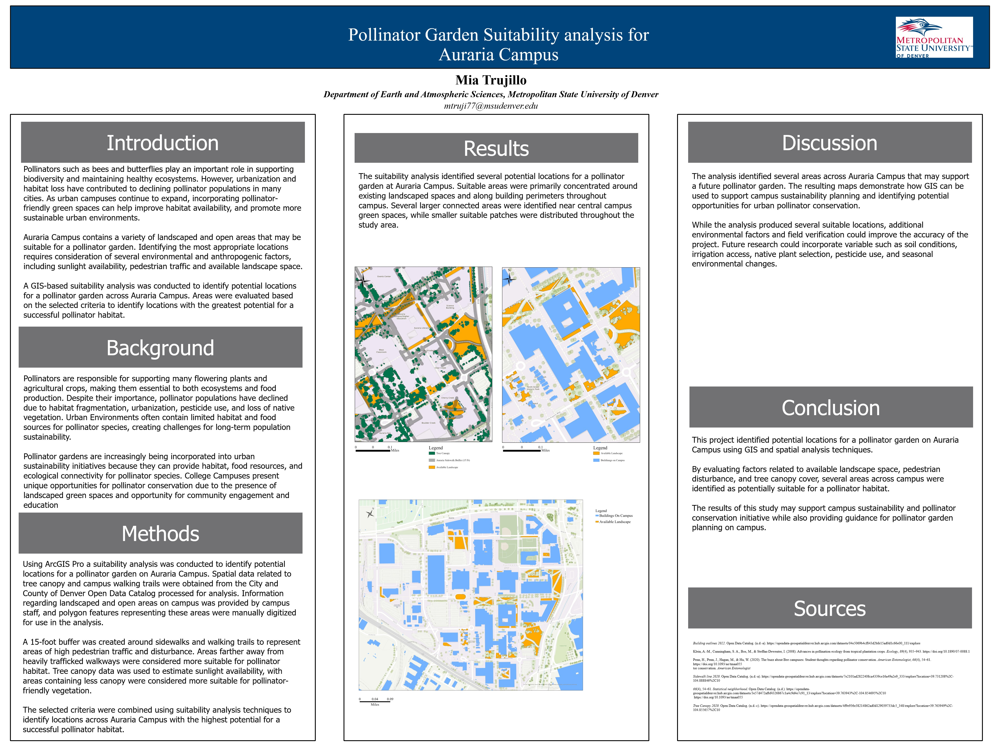

Selected GIS Projects
Maps and analyses demonstrating environmental research, spatial reasoning, cartographic design, and planning applications.

Soil pH Distribution and Mine Site Locations
A cartographic analysis examining the spatial relationship between soil pH patterns and mine locations. The project emphasizes clear symbology, environmental data interpretation, and visual communication of possible areas of concern.
ArcGIS Pro
Spatial Analysis
Environmental Mapping
Cartographic Design

Pollinator Garden Suitability Analysis
A site-suitability project identifying promising locations for pollinator habitat. The analysis brings together environmental and site conditions to support campus planning, habitat enhancement, and defensible decision-making.
Suitability Modeling
Environmental Planning
Site Assessment
Map Communication
More work in progress
Future additions may include watershed analysis, snowpack and streamflow visualization, restoration planning, field data collection, and environmental change mapping.
About Me
I am an Environmental Science student at Metropolitan State University of Denver with interests in cartography, environmental planning, ecological restoration, and the use of GIS to visualize environmental challenges. I am especially motivated by projects that turn complex spatial information into maps that are understandable, useful, and grounded in real-world decision-making.
Before pursuing environmental science, I served in the United States Navy in medical and emergency-care roles. That experience strengthened my leadership, accountability, documentation, communication, and ability to make careful decisions in fast-paced environments. I now bring those transferable skills to research, fieldwork, spatial analysis, and collaborative projects.
Outside of academics, I enjoy hiking, exploring Colorado, baking, playing pickleball, and completing creative projects that connect science and design.
Core Skills
ArcGIS Pro
Spatial Analysis
Cartography
Environmental Planning
Environmental Research
Field Observation
Site Assessment
Microsoft Excel
Data Organization
Technical Documentation
Leadership
Team Collaboration
Problem Solving
6
Team Members Led
3,500+
Patient Intakes Supported
U.S. Navy
Veteran
GIS
Environmental Focus
Experience & Education
Medical Assistant · United States Navy
Norfolk, Virginia · February 2022–Present
Led up to six Corpsmen supporting ten independent-duty corpsmen and physician assistants. Managed triage and intake for approximately 2,500 patients, documented assessment findings, supported urgent care, and completed technical procedures while maintaining accuracy and professional standards.
Transferable strengths: team leadership, high-volume workflow management, technical documentation, quality control, critical thinking, and independent work.
Emergency Medical Technician · United States Navy
Okinawa, Japan · June 2019–June 2021
Supported patient intake, emergency care, laboratory preparation, clinical procedures, inventory management, and standardized education. Worked closely with healthcare teams and communicated important changes in patient condition to medical staff.
Transferable strengths: field readiness, observation, communication, procedure compliance, logistics, adaptability, and attention to detail.
B.S. Environmental Science · Metropolitan State University of Denver
In progress · Expected graduation Fall 2027
Coursework and project experience in GIS, spatial analysis, environmental research, statistics, field observation, cartographic design, and environmental planning.
Hospital Corpsman A-School
San Antonio, Texas · June 2019
Completed medical training and earned Dean's List recognition.
Certifications
EMT-B · CPR · ARMA
Download Full Resume